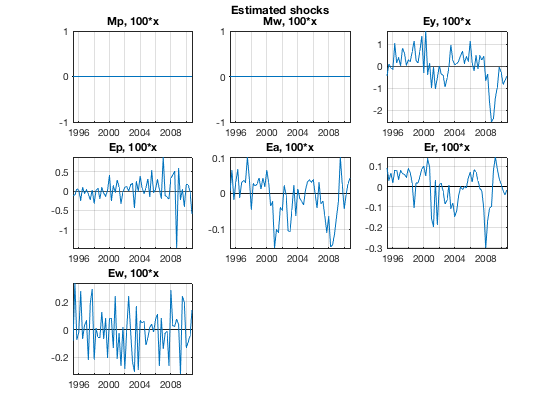
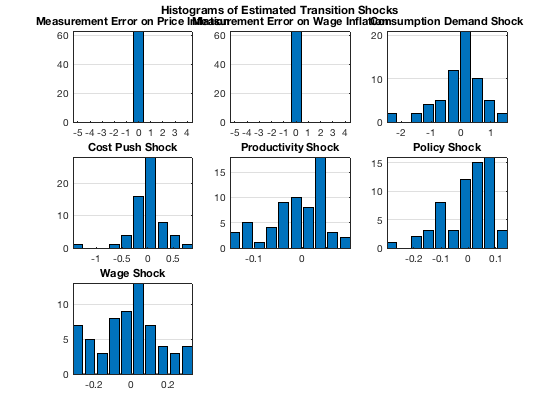
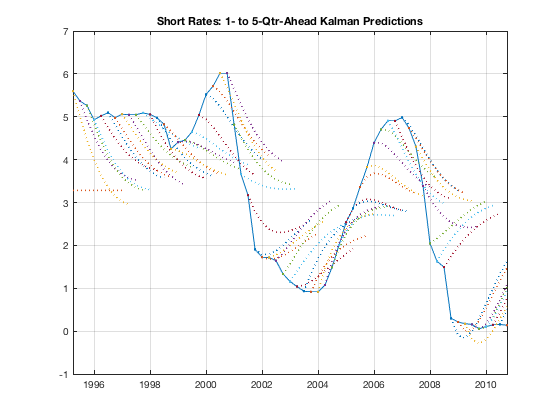
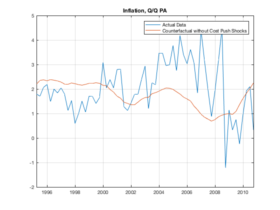
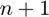
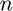
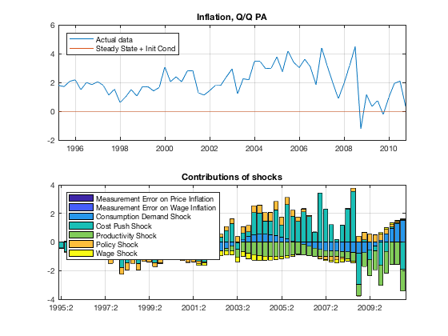
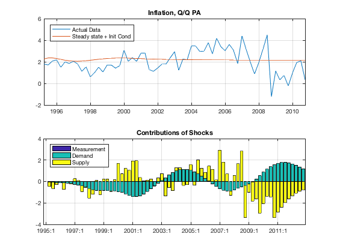

Kalman Filtering and Historical Simulations
Run the Kalman filter on the historical data to back out unobservable variables (such as the productivity process) and shocks, and perform a number of analytical exercises that help understand the inner workings of the model.
Contents
- Dependencies
- Clear Workspace
- Load Estimated Model Object and Historical Database
- Run Kalman Filter
- Plot Estimated Shocks
- K-Step-Ahead Kalman Predictions
- Resimulate Filtered Data
- Run Counterfactual
- Simulate Contributions of Shocks
- Plot Grouped Contributions
- Save Output Data for Further Use
- Show Variables and Objects Created in This File
Dependencies
Run the following m-files before this one:
Clear Workspace
Clear workspace, close all graphics figures, clear command window, and check the IRIS version.
clear; close all; clc; irisrequired 20180131
Load Estimated Model Object and Historical Database
Load the model object estimated in estimate_params.m, and the historical database created in read_data.
load mat/estimate_params.mat mest load mat/read_data.mat d startHist endHist
Run Kalman Filter
The output data struct returned from the Kalman filter, f, consist by default of three sub-databases:
- .mean with point estimates of all model variables as tseries objects,
- .std with std dev of those estimates as tseries objects,
- .mse with the MSE matrix for backward-looking transition variables.
Use the options Output=, MeanOnly=, ReturnStd= and ReturnMse= to control what is reported in the output data struct.
[~, f, v, ~, pe, co] = filter(mest, d, startHist:endHist+10);
Plot Estimated Shocks
The measurement shocks are kept turned off in our exercises (i.e. their standard errors are zero), and hence their estimates are zero throughout the historical sample.
list = get(mest, 'elist'); dbplot(f.mean, startHist:endHist, list, ... 'Tight=', true, 'ZeroLine=', true, 'Transform=', @(x) 100*x); ftitle('Estimated shocks'); dbplot( ... f.mean, startHist:endHist, list, ... 'Tight=', true, ... 'ZeroLine=', true, ... 'PlotFunc=', @hist, ... 'Title=', get(mest, 'EDescript'), ... 'Transform=', @(x) 100*x ... ); ftitle('Histograms of Estimated Transition Shocks'); 
K-Step-Ahead Kalman Predictions
Re-run the Kalman filter requesting now also prediction step data (see the option Output=) extended to 5 quarters ahead (see the option Ahead=). Each row of the time series returned in the .pred sub-database contains t|t-1, t|t-2, ..., t|t-k predictions.
Because of the option MeanOnly=true, the filter output struct, g, only containes mean databases directly under .pred and .smooth, and no subdatabases .mean are created.
Use the function plotpred( ) to organize and plot the data in a convenient way.
k = 8; [~, g] = filter(mest, d, startHist:endHist, ... 'Output=', 'Pred, Smooth', 'MeanOnly=', true, 'Ahead=', k); g %#ok<NOPTS> g.pred g.smooth figure( ); [h1, h2] = plotpred(startHist:endHist, d.Short, g.pred.Short); set(h1, 'Marker', '.'); set(h2, 'LineStyle', ':', 'LineWidth', 1.5); grid on; title('Short Rates: 1- to 5-Qtr-Ahead Kalman Predictions');
g =
struct with fields:
pred: [1x1 struct]
smooth: [1x1 struct]
ans =
struct with fields:
Short: [63x8 Series]
Infl: [63x8 Series]
Growth: [63x8 Series]
Wage: [63x8 Series]
Y: [63x8 Series]
N: [63x8 Series]
W: [63x8 Series]
Q: [63x8 Series]
H: [63x8 Series]
A: [63x8 Series]
dA: [63x8 Series]
P: [63x8 Series]
R: [63x8 Series]
Pk: [63x8 Series]
Rk: [63x8 Series]
Lambda: [63x8 Series]
dP: [63x8 Series]
d4P: [63x8 Series]
dW: [63x8 Series]
RMC: [63x8 Series]
Mp: [63x8 Series]
Mw: [63x8 Series]
Ey: [63x8 Series]
Ep: [63x8 Series]
Ea: [63x8 Series]
Er: [63x8 Series]
Ew: [63x8 Series]
alpha: 1.0074
beta: 0.9962
gamma: 0.6000
delta: 0.0300
k: 10
pi: 1.0062
eta: 6
psi: 0.2500
chi: 0.9138
xiw: 133.8286
xip: 264.6679
rhoa: 0.9000
rhor: 0.8587
kappap: 2.9457
kappan: 0.3419
Short_: -3.9012
Infl_: -0.3539
Growth_: 0.0078
Wage_: -1.9244
ttrend: [0x8 Series]
std_Mp: 0
std_Mw: 0
std_Ey: 0.0079
std_Ep: 0.0032
std_Ea: 0.0011
std_Er: 9.2918e-04
std_Ew: 0.0019
corr_Ep__Er: -0.1107
ans =
struct with fields:
Short: [63x1 Series]
Infl: [63x1 Series]
Growth: [63x1 Series]
Wage: [63x1 Series]
Y: [65x1 Series]
N: [63x1 Series]
W: [65x1 Series]
Q: [63x1 Series]
H: [63x1 Series]
A: [64x1 Series]
dA: [64x1 Series]
P: [67x1 Series]
R: [64x1 Series]
Pk: [63x1 Series]
Rk: [63x1 Series]
Lambda: [63x1 Series]
dP: [64x1 Series]
d4P: [63x1 Series]
dW: [64x1 Series]
RMC: [63x1 Series]
Mp: [63x1 Series]
Mw: [63x1 Series]
Ey: [63x1 Series]
Ep: [63x1 Series]
Ea: [63x1 Series]
Er: [63x1 Series]
Ew: [63x1 Series]
alpha: 1.0074
beta: 0.9962
gamma: 0.6000
delta: 0.0300
k: 10
pi: 1.0062
eta: 6
psi: 0.2500
chi: 0.9138
xiw: 133.8286
xip: 264.6679
rhoa: 0.9000
rhor: 0.8587
kappap: 2.9457
kappan: 0.3419
Short_: -3.9012
Infl_: -0.3539
Growth_: 0.0078
Wage_: -1.9244
ttrend: [63x1 Series]
std_Mp: 0
std_Mw: 0
std_Ey: 0.0079
std_Ep: 0.0032
std_Ea: 0.0011
std_Er: 9.2918e-04
std_Ew: 0.0019
corr_Ep__Er: -0.1107
 Resimulate Filtered Data
This is to illustrate that running a simulation with the initial conditions and shocks estimated by the Kalman filter exactly reproduces the historical paths of the observables.
s = simulate(mest, f.mean, startHist:endHist, 'Anticipate=', false);
dbfun(@(x, y) max(abs(x-y)), f.mean, s)
ans =
struct with fields:
Short: 5.9508e-14
Infl: 7.4163e-14
Growth: 2.8422e-14
Wage: 9.2371e-14
Y: 1.7764e-15
N: 2.2204e-16
W: 3.5527e-15
Q: 9.9920e-16
H: 1.7764e-15
A: 1.3323e-15
dA: 2.2204e-16
P: 1.1102e-15
R: 2.2204e-16
Pk: 3.5527e-15
Rk: 1.2490e-16
Lambda: 7.2164e-16
dP: 2.2204e-16
d4P: 4.4409e-16
dW: 2.2204e-16
RMC: 5.5511e-16
Mp: 0
Mw: 0
Ey: 0
Ep: 0
Ea: 0
Er: 0
Ew: 0
alpha: 0
beta: 0
gamma: 0
delta: 0
k: 0
pi: 0
eta: 0
psi: 0
chi: 0
xiw: 0
xip: 0
rhoa: 0
rhor: 0
kappap: 0
kappan: 0
Short_: 0
Infl_: 0
Growth_: 0
Wage_: 0
ttrend: 0
std_Mp: 0
std_Mw: 0
std_Ey: 0
std_Ep: 0
std_Ea: 0
std_Er: 0
std_Ew: 0
corr_Ep__Er: 0
Run Counterfactual
Remove the cost-push shocks from the filtered database, and re-simulate the historical data. This experiment shows what the data would have looked like if inflation had been determeined exactly by the Phillips curve without any cost-push shocks.
f1 = f.mean; f1.Ep(:) = 0; s1 = simulate(mest, f1, startHist:endHist, 'Anticipate=', false); figure( ); plot([s.Infl, s1.Infl]); grid on; title('Inflation, Q/Q PA'); legend('Actual Data', 'Counterfactual without Cost Push Shocks');
Simulate Contributions of Shocks
Re-simulate the filtered data with the Contributions= option set to true. This returns each variable as a multivariate time series with  columns, where  is the number of model shocks. The first columns are contributions of individual shocks (in order of their appearance in the !transition_shocks declaration block in the model file), the last, -th column is the contribution of the initial condition and/or the deterministic drift.
c = simulate(mest, s, startHist:endHist+8, ... 'Anticipate=', false, 'Contributions=', true, 'AppendPresample=', true); c %#ok<NOPTS> c.Infl
To plot the shock contributions, use the function barcon( ). Plot first the actual data and the effect of the initial condition and deterministic constant (i.e. the last, -th column in the database c) in the upper panel, and then the contributions of individual shocks, i.e. the first columns.
figure( );
subplot(2, 1, 1);
plot(startHist:endHist, [s.Infl, c.Infl{:, end}]);
grid on;
title('Inflation, Q/Q PA');
legend('Actual data', 'Steady State + Init Cond', ...
'location', 'northWest');
subplot(2, 1, 2);
barcon(startHist:endHist, c.Infl{:, 1:end-2});
grid on;
title('Contributions of shocks');
edescript = get(mest, 'EDescript');
legend(edescript{:}, 'Location', 'NorthWest');
c =
struct with fields:
Short: [71x9 Series]
Infl: [71x9 Series]
Growth: [71x9 Series]
Wage: [71x9 Series]
Y: [73x9 Series]
N: [71x9 Series]
W: [73x9 Series]
Q: [71x9 Series]
H: [71x9 Series]
A: [72x9 Series]
dA: [72x9 Series]
P: [75x9 Series]
R: [72x9 Series]
Pk: [71x9 Series]
Rk: [71x9 Series]
Lambda: [71x9 Series]
dP: [72x9 Series]
d4P: [71x9 Series]
dW: [72x9 Series]
RMC: [71x9 Series]
Mp: [71x9 Series]
Mw: [71x9 Series]
Ey: [71x9 Series]
Ep: [71x9 Series]
Ea: [71x9 Series]
Er: [71x9 Series]
Ew: [71x9 Series]
alpha: 1.0074
beta: 0.9962
gamma: 0.6000
delta: 0.0300
k: 10
pi: 1.0062
eta: 6
psi: 0.2500
chi: 0.9138
xiw: 133.8286
xip: 264.6679
rhoa: 0.9000
rhor: 0.8587
kappap: 2.9457
kappan: 0.3419
Short_: -3.9012
Infl_: -0.3539
Growth_: 0.0078
Wage_: -1.9244
ttrend: [71x9 Series]
std_Mp: 0
std_Mw: 0
std_Ey: 0.0079
std_Ep: 0.0032
std_Ea: 0.0011
std_Er: 9.2918e-04
std_Ew: 0.0019
corr_Ep__Er: -0.1107
ans =
Series object: 71-by-9
1995Q2: 0 0 -0.017867 -0.40055 0.001185 -0.024858 -0.023288 2.2604 0
1995Q3: 0 0 -0.013559 -0.64524 0.014469 -0.055554 0.049367 2.3578 0
1995Q4: 0 0 -0.0038804 -0.3069 0.027578 -0.099566 0.092349 2.3579 0
1996Q1: 0 0 0.0061517 -0.15266 0.049141 -0.13975 0.11553 2.3021 0
1996Q2: 0 0 0.065442 -0.89839 0.085713 -0.19042 0.19947 2.2242 0
1996Q3: 0 0 0.093532 -0.36363 0.12425 -0.2484 0.23971 2.1485 0
1996Q4: 0 0 0.10236 -0.48484 0.17011 -0.29778 0.26255 2.0904 0
1997Q1: 0 0 0.073446 -0.23544 0.22255 -0.34826 0.27832 2.0572 0
1997Q2: 0 0 0.053211 -0.4049 0.27927 -0.39348 0.21196 2.05 0
1997Q3: 0 0 0.013797 -1.0681 0.35181 -0.43108 0.19036 2.0657 0
1997Q4: 0 0 -0.06906 -0.72188 0.43052 -0.45641 0.24308 2.0986 0
1998Q1: 0 0 -0.16261 -1.6173 0.49922 -0.48216 0.21987 2.1419 0
1998Q2: 0 0 -0.26058 -1.1894 0.56525 -0.50258 0.18843 2.1892 0
1998Q3: 0 0 -0.33438 -0.65224 0.62352 -0.50417 0.13584 2.235 0
1998Q4: 0 0 -0.37477 -1.1332 0.67309 -0.45435 0.068928 2.275 0
1999Q1: 0 0 -0.44538 -0.52447 0.71679 -0.39378 0.046104 2.3068 0
1999Q2: 0 0 -0.53546 -0.53436 0.75016 -0.32851 0.013283 2.329 0
1999Q3: 0 0 -0.60475 -0.84302 0.77997 -0.27362 0.011103 2.3417 0
1999Q4: 0 0 -0.63404 -0.58356 0.80368 -0.2431 -0.040224 2.3457 0
2000Q1: 0 0 -0.72475 0.92992 0.83112 -0.24212 -0.058432 2.3424 0
2000Q2: 0 0 -0.75764 -0.087121 0.85847 -0.25419 -0.044444 2.3337 0
2000Q3: 0 0 -0.85369 0.40181 0.87493 -0.29931 -0.06159 2.3212 0
2000Q4: 0 0 -0.94601 0.16933 0.87972 -0.35958 -0.0055359 2.3066 0
2001Q1: 0 0 -1.0624 1.091 0.84559 -0.3586 -0.011633 2.2913 0
2001Q2: 0 0 -1.1134 1.1855 0.77369 -0.28473 -0.025086 2.2762 0
2001Q3: 0 0 -1.1418 -0.18254 0.6575 -0.20882 -0.10885 2.2621 0
2001Q4: 0 0 -1.0991 -0.29282 0.50916 -0.078647 -0.16997 2.2494 0
2002Q1: 0 0 -0.96949 0.076411 0.33372 0.039661 -0.28475 2.2384 0
2002Q2: 0 0 -0.80194 0.42457 0.15407 0.13396 -0.3612 2.229 0
2002Q3: 0 0 -0.61469 0.32839 -0.020724 0.21042 -0.33182 2.2211 0
2002Q4: 0 0 -0.44161 0.80665 -0.19686 0.28393 -0.27878 2.2144 0
2003Q1: 0 0 -0.25646 1.2788 -0.37078 0.34745 -0.27616 2.2088 0
2003Q2: 0 0 -0.04891 -0.46224 -0.53141 0.37975 -0.34223 2.204 0
2003Q3: 0 0 0.19305 0.44801 -0.6655 0.41541 -0.33687 2.1997 0
2003Q4: 0 0 0.38161 0.3255 -0.78527 0.44804 -0.38923 2.1959 0
2004Q1: 0 0 0.49573 1.552 -0.87674 0.4965 -0.39417 2.1923 0
2004Q2: 0 0 0.54442 1.4794 -0.94361 0.55246 -0.36001 2.189 0
2004Q3: 0 0 0.54207 0.91525 -0.98821 0.59252 -0.29109 2.1857 0
2004Q4: 0 0 0.50674 0.95807 -1.015 0.60338 -0.2465 2.1827 0
2005Q1: 0 0 0.44774 1.7897 -1.0205 0.59063 -0.21555 2.1797 0
2005Q2: 0 0 0.33879 0.85839 -1.0035 0.55307 -0.1785 2.1769 0
2005Q3: 0 0 0.2162 2.3935 -0.96404 0.49804 -0.13081 2.1742 0
2005Q4: 0 0 0.078036 1.7241 -0.90453 0.41748 -0.092162 2.1716 0
2006Q1: 0 0 -0.023649 1.4384 -0.82524 0.31136 -0.039668 2.1693 0
2006Q2: 0 0 -0.15401 2.0985 -0.73614 0.20196 0.032644 2.1671 0
2006Q3: 0 0 -0.30615 1.7712 -0.6496 0.080163 0.015474 2.1651 0
2006Q4: 0 0 -0.42023 0.68744 -0.5598 -0.044052 0.013109 2.1633 0
2007Q1: 0 0 -0.52815 3.4345 -0.48165 -0.15157 -0.031494 2.1617 0
2007Q2: 0 0 -0.5875 2.3087 -0.41789 -0.22756 -0.078724 2.1602 0
2007Q3: 0 0 -0.62164 1.2043 -0.37921 -0.26788 -0.1174 2.1589 0
2007Q4: 0 0 -0.62813 0.17927 -0.37697 -0.25094 -0.21224 2.1577 0
2008Q1: 0 0 -0.66408 1.183 -0.40673 -0.13026 -0.20212 2.1567 0
2008Q2: 0 0 -0.68406 2.3042 -0.4837 0.041128 -0.16569 2.1557 0
2008Q3: 0 0 -0.72851 3.5476 -0.60706 0.22749 -0.1145 2.1548 0
2008Q4: 0 0 -0.77589 -2.1894 -0.76961 0.40926 -0.042995 2.154 0
2009Q1: 0 0 -0.75002 0.14637 -0.95684 0.52346 0.028296 2.1533 0
2009Q2: 0 0 -0.58094 -0.6346 -1.1501 0.54759 -0.0053321 2.1526 0
2009Q3: 0 0 -0.27988 -0.3389 -1.3123 0.50335 0.022628 2.152 0
2009Q4: 0 0 0.13681 -1.6033 -1.4386 0.41664 0.096654 2.1515 0
2010Q1: 0 0 0.57283 -0.64762 -1.5292 0.30925 0.11726 2.151 0
2010Q2: 0 0 0.95199 0.097831 -1.5741 0.20378 0.097199 2.1505 0
2010Q3: 0 0 1.2671 0.077367 -1.5701 0.11721 0.056298 2.1501 0
2010Q4: 0 0 1.5144 -1.913 -1.5189 0.048367 0.054755 2.1497 0
2011Q1: 0 0 1.7029 -1.487 -1.4342 -0.0039498 0.052265 2.1494 0
2011Q2: 0 0 1.8161 -1.1224 -1.3254 -0.039423 0.048263 2.1491 0
2011Q3: 0 0 1.8504 -0.82294 -1.2025 -0.059583 0.042768 2.1488 0
2011Q4: 0 0 1.8117 -0.58646 -1.0752 -0.067086 0.036164 2.1485 0
2012Q1: 0 0 1.7124 -0.40677 -0.95153 -0.065101 0.029007 2.1483 0
2012Q2: 0 0 1.5682 -0.27551 -0.83742 -0.056813 0.021875 2.1481 0
2012Q3: 0 0 1.3958 -0.18356 -0.73651 -0.045087 0.01527 2.1479 0
2012Q4: 0 0 1.2107 -0.12202 -0.65043 -0.03226 0.0095631 2.1477 0
Columns 1 through 3
'Infl <--[+] Mp' 'Infl <--[+] Mw' 'Infl <--[+] Ey'
Columns 4 through 6
'Infl <--[+] Ep' 'Infl <--[+] Ea' 'Infl <--[+] Er'
Columns 7 through 9
'Infl <--[+] Ew' 'Infl <--[+] Init...' 'Infl <--[+] Nonl...'
user data: empty
 Plot Grouped Contributions
Use a grouping object to define groups of shocks whose contributions will be added together and plotted as one category. Run eval( ) to create a new database with the contributions grouped accordingly. Otherwise, the information content of this figure window is the same as the previous one.
g = grouping(mest, 'Shock', 'IncludeExtras=', true); g = addgroup(g, 'Measurement', 'M.*'); g = addgroup(g, 'Demand', 'Ey, Er'); g = addgroup(g, 'Supply', 'Ep, Ea, Ew'); detail(g); [cg, lg] = eval(g, c); figure( ); subplot(2, 1, 1); plot(startHist:endHist, [s.Infl, c.Infl{:, end-1}]); grid on; title('Inflation, Q/Q PA'); legend('Actual Data', 'Steady state + Init Cond', ... 'Location', 'NorthWest'); subplot(2, 1, 2); conbar(cg.Infl{:, 1:end-1}); grid on; title('Contributions of Shocks'); legend(lg(:, 1:end-1), 'Location', 'NorthWest');
+Group 'Measurement': +Mp 'Measurement Error on Price Inflation' +Mw 'Measurement Error on Wage Inflation' +Group 'Demand': +Ey 'Consumption Demand Shock' +Er 'Policy Shock' +Group 'Supply': +Ep 'Cost Push Shock' +Ea 'Productivity Shock' +Ew 'Wage Shock' +Group 'Other': +Init+Const+DTrend 'Init+Const+DTrend' +Nonlinear 'Nonlinear'
Save Output Data for Further Use
Save the output database f from the basic run of the filter in a mat-file (binary file) for future use.
save mat/filter_hist_data.mat f
Show Variables and Objects Created in This File
whos
Name Size Bytes Class Attributes ans 2x1 16 matlab.graphics.chart.primitive.Line c 1x1 191498 struct cg 1x1 92176 struct co 7x7 2016 namedmat d 1x1 15480 struct edescript 1x7 1084 cell endHist 1x1 8 DateWrapper f 1x1 179944 struct f1 1x1 32232 struct g 1x1 8207 grouping h1 1x1 8 matlab.graphics.chart.primitive.Line h2 64x1 512 matlab.graphics.chart.primitive.Line k 1x1 8 double lg 1x4 504 cell list 1x7 812 cell mest 1x1 90932 model pe 1x1 3462 struct s 1x1 29992 struct s1 1x1 29992 struct startHist 1x1 8 DateWrapper v 1x1 8 double